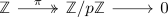
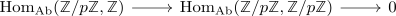

hom functor in general not right exact
Proposition
Let \(R\) be a ring, $K$ an \(R\)-module and $\mathrm{RMod}$ the category RMod. Then the hom-functor is in general not right exact functor
Proof
Consider the exact sequence

of abelian groups (cf. correspondence of abelian groups and Z-Modules)
Then
\begin{align*}
\mathrm{Hom}_{\mathrm{Ab}}(\mathbb{Z}/p \mathbb{Z}, \mathbb{Z}) = \{0\}
\end{align*}
and
\begin{align*}
\mathrm{Hom}_{\mathrm{Ab}}(\mathbb{Z}/p \mathbb{Z}, \mathbb{Z}/ p \mathbb{Z}) = \{0,...,p\}
\end{align*}
as a map $1 \mapsto \{0,1,...,p\}$ gives rise to a welldefined group homomorphism
hence by reasons of cardinality, the sequence

is not exact